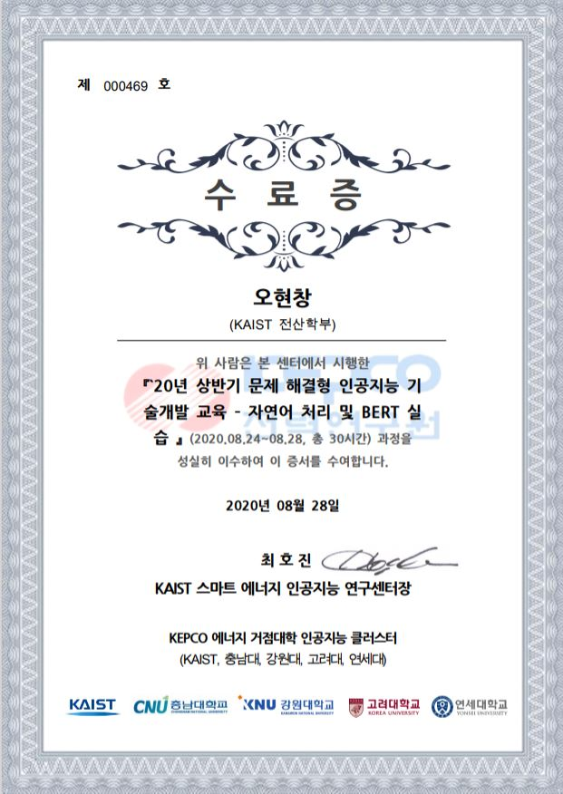
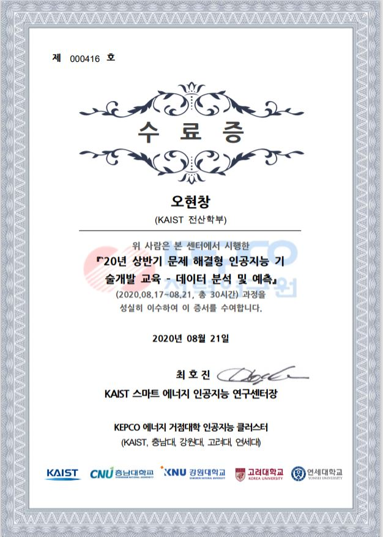

학력
KAIST
대전, 대한민국
2017.03 - 2023.08 (군복무 후 졸업 예정)
전산학부 / 생명과학과 복수전공
카이스트 총장 장학생 (KPF)
대통령과학장학생
리더십 마일리지 인증서 - 다이아몬드 등급
스마트 에너지 인공지능 연구센터
문제 해결형 인공지능 기술개발 교육 수료 - 자연어 처리 및 BERT 실습 (수료증)
×

문제 해결형 인공지능 기술개발 교육 수료 - 데이터 분석 및 예측 (수료증)
×

University of California, Berkeley
버클리, 캘리포니아, 미국
2017.06 - 2017.08
U.C. Berkeley Summer Session
다변수 미적분학, 일반심리학
카이스트 총장님께 교육비 및 체재비 전액을 지원받았습니다.
KAIST부설 한국과학영재학교
부산, 대한민국
2014.02 - 2017.02
생명과학 최우등 졸업
Camborne Science and International Academy
캠본, 콘월, 영국
2016년 여름
단기교환학생
로켓 추진 동체 프로토타입 제작.
고드레비 해변가 생태 탐사.
모스크바 화학 영재학교
모스크바, 러시아
2015.08
10th Chemistry Summer School
항생제 / 중금속을 탐지하는 유기 센서 합성 및 성능 실험
경력
대한민국
2021.2-2022.08
훈련병
서울, 대한민국
2020.12-2020.02
개발자: 단어 학습 모듈 개발 및 서버 구현
NMAIL (신경-기계 증강 지능 연구실), 전산학부, KAIST
대전, 대한민국
2020.08-2020.12
연구인턴: 뇌파로 드론을 조종하는 연구
KIXLAB (카이스트 인터랙션 연구실), 전산학부, KAIST
대전, 대한민국
2020.01-2020.08
연구인턴: 사용자 스피치에 기반한 어휘의 개인 맞춤 교정 및 확장
저서
유기금속복합구조 (무기화학/신소재)
나노화학연구실, 한국과학영재학교 (최은영 교수님 지도)
부산, 대한민국
제1저자, 국제학술저널 "Tabular Organisation of Ionothermally Prepared MOFs To Extrapolate Chemical Trends and Successfully Predict Synthesis Results" Biomedical Journal of Scientific & Technical Research (2018)
제2저자, SCI급 국제학술저널 "Microporous metal organic framework-based copolymers with efficient gas adsorption capability and high temporal stability" Macromolecular Research (2017)
제1저자, SCI급 국제학술저널 "Ionothermal synthesis of a novel 3D cobalt coordination polymer with a uniquely reported framework:[BMI] 2 [Co2 (BTC) 2 (H2O) 2]."Advances in Materials Science and Engineering (2017)
제1저자, 국제학회 발표 "The Effect of [RMI] X (R= alkyl; X= halide) Ionic Liquids on the Formation of M-H₃BTC Metal Organic Frameworks" Korean Polymer Society 40th Annual Conference (2016)
신경줄기세포
동물세포실험실, 한국과학영재학교 (박기엽 박사님 지도)
부산, 대한민국
제2저자, 국내학술저널 "Inhibition of Neurogenesis of Subventricular Zone Neural Stem Cells by 5-ethynyl-2-deoxyuridine (EdU)." 한국생명과학회지 (2017)
출판되지 않은 연구 프로젝트
인간-컴퓨터 상호작용
KIXLAB (카이스트 인터랙션 연구실), 전산학부, KAIST (김주호 교수님 지도)
대전, 대한민국
2020.01-2020.08
URP: 사용자 스피치에 기반한 어휘의 개인 맞춤 교정 및 확장
미생물연료전지
촉매 및 그린에너지 연구실, 부경대학교 (우희철/장호남 교수님 지도)
부산, 대한민국
제5회 전국 R&E 공동발표회 - DGIST 총장상
리그닌을 연료로 하는 미생물연료전지 폐목재의 대부분을 이루며 생화학적으로 분해가 어려운 리그닌을 분해해 에너지를 얻는 미생물연료전지 제작 (2015)
분석화학연구실, 한국과학영재학교 (천만석 박사님 지도)
부산, 대한민국
미생물담수화전지 대한민국의 해수를 담수화할 수 있는 미생물담수화전지의 제작을 위해 여러 종류의 이온 교환막, 미생물 조성, 먹이 등 조건을 탐색(2016)
시그마 연구실, National Junior College
싱가포르
미생물담수화전지 싱가포르의 해수를 담수화할 수 있는 미생물담수화전지의 제작을 위해 각 미생물 조성 별로 다양한 전해질 실험 (2017)
금속이온 탐지 유기센서
유기합성실험실, 한국과학영재학교 (오진호 박사님 지도)
부산, 대한민국
다양한 금속 이온을 감지할 수 있는 유기 센서 합성 및 성능 실험. IR 및 NMR을 이용해 합성 성공 여부 확인. (2015)
모스크바 화학 영재학교
모스크바, 러시아
유기 센서의 리간드를 여러 후보 물질로 치환해 유기 센서의 성능 개선 (2015)
학외 활동
저작 및 출판 활동
KAIST 리서치 매거진
대전, 대한민국
2020.08~ 2021.01
영문판 감수: 번역된 영문 기사 감수
기자: KAIST 연구기획처와 함께 리서치 매거진 첫 호를 기획. KAIST의 여러 연구자를 인터뷰 한 뒤 기사 작성.
대한민국
2017.09-2019.06
학술부장: KAIST의 연구성과 및 과학/기술 이슈에 대한 기사 작성, 교정 및 편집
문화부 기자: 예술 전시, 영화, 도서 및 문화 이슈에 대한 기사 작성.
번역
KAIST 새내기 프로그램 디자이너
대전, 대한민국
2020.08~ 현재
역자:
KAIST 1학년 필수과목 "신나는 대학생활" 교육자료 번역
리더십 활동
KAIST 총장 장학생
국제협력부장:
IIT Madras와 함께 제 1회 Contextual Research Exchange Program을 기획 및 진행
첸나이, 인도
2019.08, 2020.1
학생 대표
대전, 대한민국
2017.12-2018.12
학술 세미나 관리: 화학적 모델 설계, 기계 학습, 신경과학 등 다양한 세부 주제의 학술 세미나 관리 및 참여
봉사활동 관리: 유성구청과 협업해 인근 중학교로 학생들을 파견해 멘토링 진행
카이스트 실천 리더십 단체(K-Let)
멘토: 자기존중, 진로설계 등 리더십 관련 주제로 강연 진행
보은/ 대전/ 금산, 대한민국
2017.02-2019.08
캠프 진행 멘토: 충청남도교육청과 함께 소외계층 영재학생들 대상 멘토링 캠프 진행.
연해주 일대, 러시아
2017.12-2018.01
교육 및 지식 공유
대전, 대한민국
2020.11-현재
홍보대사
카이스트 글로벌전략연구소 제 3회 국제포럼 (Youtube)
대전, 대한민국
2020.09
선정패널: 생명공학의 발전 및 트랜스휴머니즘의 윤리적 문제 제기
카이스트 전산학부
대전, 대한민국
2019.08-2020.12
랩 세션 조교: CS101 (프로그래밍 기초) 과목의 랩 세션 담당 조교로 활동.
랩 세션 보조자료 제작: CS101 (프로그래밍 기초) 과목의 랩 세션/과제/연습 퀴즈 답안 및 해설 자료 제작.
KAIST 프로로타이핑 그룹 (kOOk)
대전, 대한민국
2019.01-2020.02
세미나 발표자: HTML/CSS 및 MongoDB를 주제로 세미나 준비 및 진행
창립 멤버: 단체 운영 기획 및 Flask, R, Machine Learning 등 프로토타이핑 관련 주제의 세미나 참여
KAIST 영재교육센터
튜터: 초등 영재학생들 대상 파이썬 기초 강의 진행
대전, 대한민국
2020.09-현재
기간제 튜터: 여름 프로그래밍 캠프에 참여해 프로그래밍의 기초, 스크래치와 아두이노를 활용한 프로그래밍 실습 등 진행
대전, 대한민국
2020.08
미담장학회
대전, 대한민국
2017.08-2017.12
영어강사: 고등학생들 대상 수능 영어 강의.
KAIST 국제협력팀
대전, 대한민국
2020.09-2021.2
알고리즘 코치: KAIST 외국인 학생 대상 알고리즘 1:1 코칭
주요 수상
대전, 대한민국
2019.12
(교내) 입선: 학생 개발자와 중소기업을 연결하는 실무중심 교육 및 도급계약 플랫폼 도비
경주, 대한민국
2016.08
(세계) 2위: 단어별 번역과 문장별 번역의 비교 제시를 통해 외국의 문화와 언어를 자연스레 습득하는 소셜 네트워크 개발
한국과학영재학교 R&E 프로그램
부산, 대한민국
2015.02~ 2015.12
제5회 전국 R&E 공동발표회 - DGIST 총장상
(교내) 개인 우수상 / 단체 장려상: 폐목재의 대부분을 이루며 생화학적으로 분해가 어려운 리그닌을 분해해 에너지를 얻는 미생물연료전지 제작
대전, 대한민국
2015.08~ 2015.12
(국내) 동상: 항생제 저항성 유전자를 이용한 방사선 피폭 위해도 진단 kit 개발
인천, 대한민국
2015.01
(국내) 은상: 나일론 섬유를 이용한 인공 근육의 특성 / 젖은 섬유가 어둡게 보이는 이유에 대한 연구 진행
개인 프로젝트
2019 Yet Nonamed Testing False Positive Speech Recognition Using Evolutionary Algorithms
2019 Travelling Salesman Problem Solver Solves Travelling Salesman Problem with Stochastic Algorithms
2019 Parapipe Task Organiser that Shapes Tasks as Parallel Pipelines
2019 re:Cruit Job Hunting Platform for Students
2019 PoZangZee Renovated Email System for Expert Users
2018 Mumurm Crowdsourcing Service for Restful Places
2016 Culang Culture & Language Exchange at Scale via Social Media
유틸리티
자연어 한국어(모국어), 영어(제1언어), 중국어(HSK5급), 독일어(기초적), 러시아어(기초적), 스페인어(기초적)
프로그래밍 언어 Python, Javascript, Java, C, HTML/CSS
프레임워크 Flask, MongoDB, ReactJS